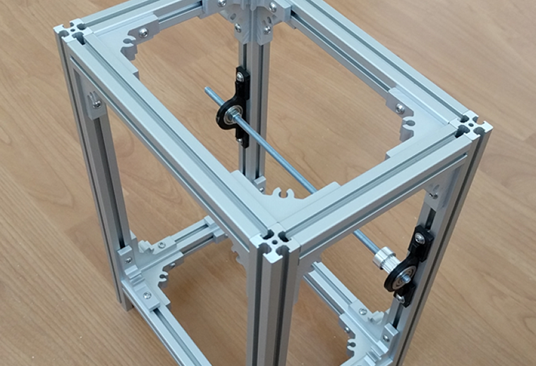
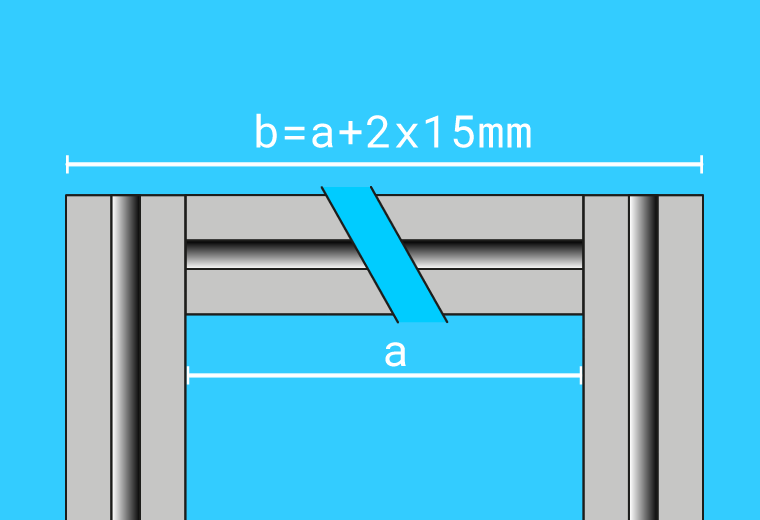
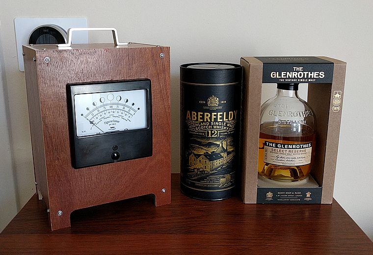
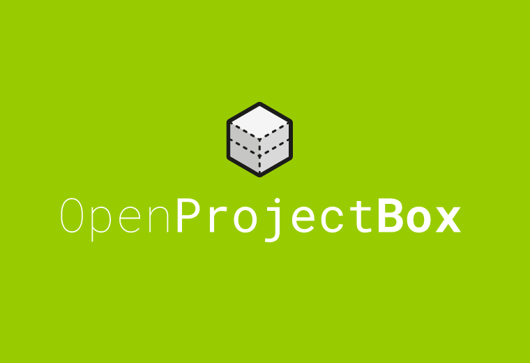

Modular project box framework.
Open Source framework for creating modular custom project boxes.
What is Open Project Box?
It's a modular framework for creating all sizes permanent or semi permanent project boxes. By combining the panels you need e.g. cooling (fan panels), acces (door panels), info (panel meter/lcd panels) etc. You can create your own custom project boxes. And if you need to change your application... you can change your project box to.

Hardware
The hardware used in Open Project Box has to be open source or widely available. The 15mm x 15mm aluminium Profiles that can be used are Makerbeam, Open beam and the Misumi hfs3-1515. Nuts and bolts are m3. In most cases only vertical beams are sufficient!

Frame Sizes
There are 5 base lenghts for "a" (see image above): 50mm, 100mm, 150mm, 200mm and 250mm. Which are used for the frame height. The frame width is composed of simple function a + (2*15mm). The only thing to add is the material thickness.

Panels
The height of the panels will be measured in units (1u = 25mm). In the first version the panels are based on 3mm acrylic sheets. But you can use any type of material for the panels. The complete list of panel sizes can be found in the github repository (Work in Progress)

Just to give you an idea
Give your projects a vintage or industrial appearance. It can be used for all kinds of semi- or permanent installations

Contribute
Because a lot still has to be done. For intstance creating all the base panels (svg, cad, collada, stl etc. files). Creating the modular panels. For instance button-, fan-, lcd-, door- panels etc. If people want to contribute to the project
contact me via Github.